Explore the evolution of keyboards, from typewriters to custom keyboards
By: Wesley Chan
Introduction
We use keyboards every day, but it's easy to forget how much history sit behind each key. From typewriters to
today's custom keyboards, their evolution mirror the progress of technology itself. I began collecting keyboards in
2021, and what started as curiosity turned into a passion. Designing my own and studying vintage models led me to
discover just how much has changed, and how much has stayed the same.
Typewriters
Before typewriters, writing was painstakingly slow. Everything was done by hadn, and though printing presses made mass production possible,
they were bulky and impractical for everyday use.
Everything began to change in 1867 when Christopher Latham Sholes, along with Samuel L. Soule and Carlos S. Glidden, developed the first
practical and commercially successful typewriter. After refinements, E. Remington and Sons released it to the public in 1874, bringing
mechanical writing into homes and offices worldwide.
It was Sholes who introduced something that would outlast the typewriter itself, the QWERTY layout. Allegedly designed to reduce typebar jams
by spacing out commonly used pairs, this layout became the standard for generations of typists.
Typewriters quickly became a symbol mf modern producivity. Writers, students and businesses embraced them, and over time evolved from purely
mechanical designs to electric models like the IBM Selectric in 1961, which made typing faster and smoother.
Even as typewriters thrived, a new invention was quietly preparing to transform the way we type.
Golden Age
By the early 1970s, the personal computer (PC) was on the horizon. These machines would revolutionise work, eventually paving the way for the digital world we inhabit today. Personal computers often came bundled with a keyboard, which quickly became central to the user experience.
At the time, computers were a luxury. Adjusted for inflation, an IBM Personal Computer would cost around $5,577 today. These machines were exceptionally high quality, and the keyboards that accompanied them reflected this craftsmanship.
As personal computers became more popular, companies such as IBM and Apple brought their own innovations, shaping how people interacted with computers. Microswitch manufacturers simultaneously began developing switches that would shape the feel of keyboards for decades to come.
IBM
International Business Machines Corporation (IBM) is the most influential company in the history of modern keyboards.
From the 1980s to the 1990s, their designs set the standard for layout, feel, and communication protocols, shaping how millions of personal computers interacted with users.
1971
Richard Hunter Harris & Robert John Wolfram
invented the Beamspring switch, one of IBM's earliest switch mechanism which were
primarily used on mainframe and terminal computers throughout the 1970s
That same year, Harris invented the Buckling Spring switch.
These two switches became the foundation of IBM's keyboard technology for decades.
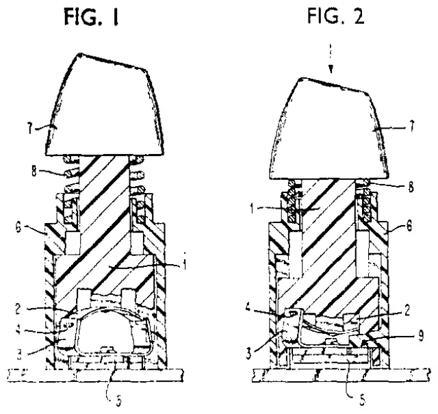
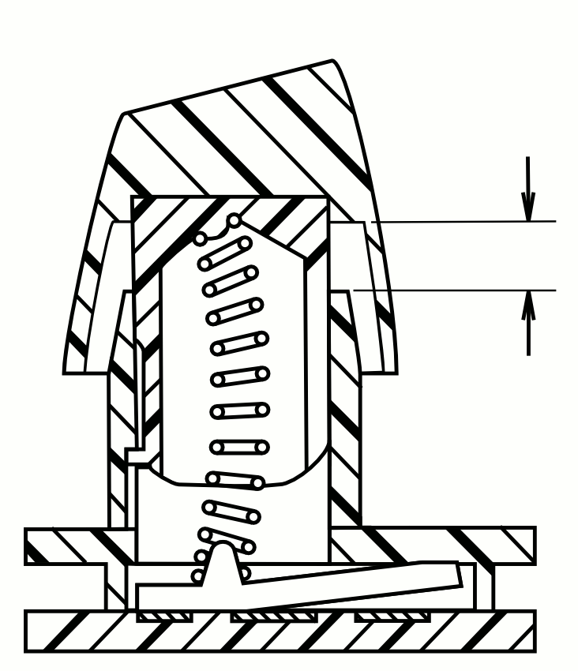
1981
IBM released the Model F XT with Buckling Springs, bundled with the IBM Personal Computer (IBM 5150).
This PC was a game-changer: it set the standard for modern keyboards.
Manufacturers everywhere copied the XT layout and adopted its communication protocol.
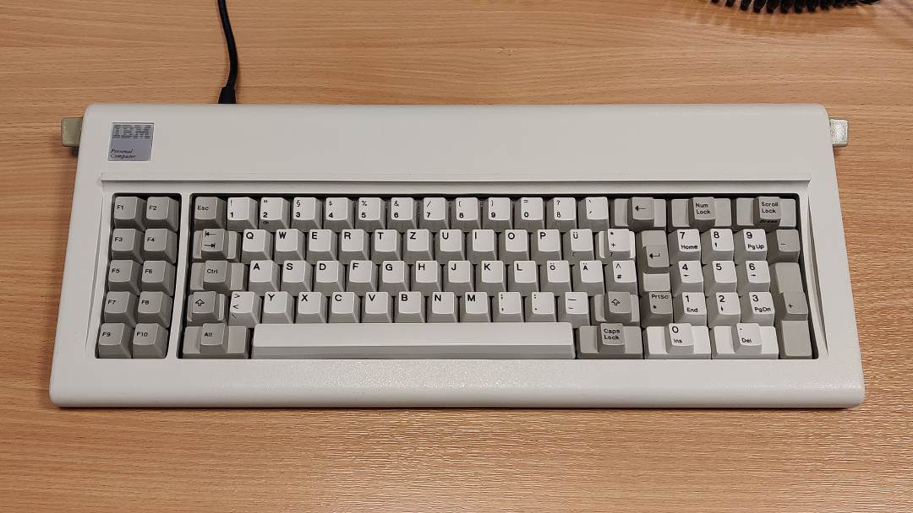
1984
IBM introduced a new member of the Model F family — the Model F AT, bundled with the IBM PC AT (IBM 5170).
It featured the new AT layout, adding a discrete number pad and a function key row, refining the earlier XT design.
The introduction of the AT communication protocol sparked another wave of keyboard standardization, as manufacturers began producing XT/AT-compatible keyboards.
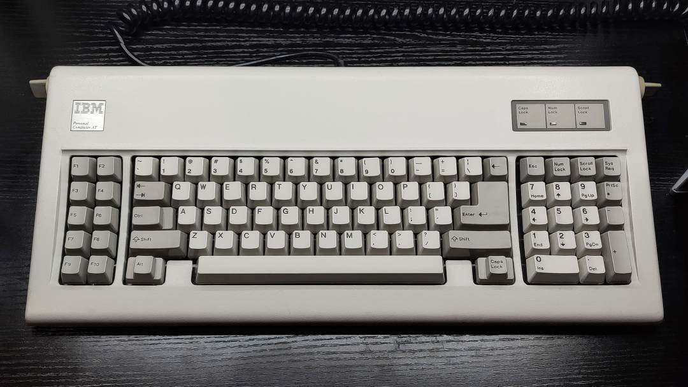
1985
IBM introduced a new line of keyboards known as the Model M, a line with membrane buckling springs.
The Enhanced Keyboard is widely regarded as one of the most legendary keyboards ever made.
It was among the first to feature the ANSI and ISO layouts that are still standard today.
Two years later, it became the first keyboard to support the PS/2 connection protocol, further shaping keyboard standards.
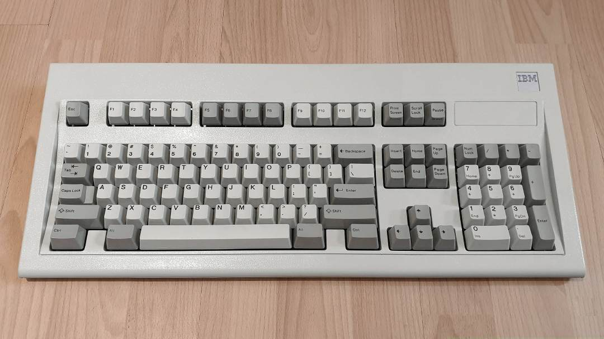
1991
By 1991, IBM shifted Model M production to Lexmark International under a five-year agreement.
After the agreement ended, Lexmark sold the Model M tooling to Unicomp, a company formed by former IBM and Lexmark employees to preserve the Model M’s legacy.
Unicomp continues to produce Model M keyboards to this day, keeping the iconic design alive.
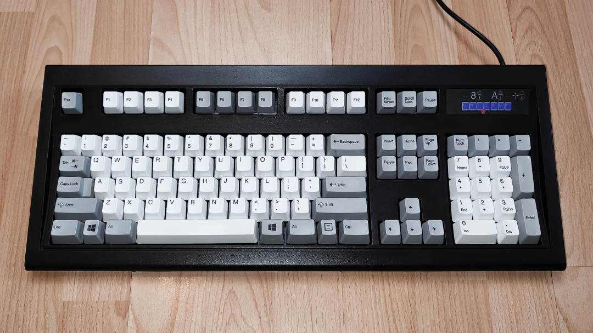
Apple
Apple also left its mark on keyboard history. The introduction of the Apple Macintosh in 1984 brought one of the earliest compact keyboard designs, the Apple M0110, roughly equivalent to today’s 60% layouts. Its influence can be seen in modern minimalist keyboards such as the Happy Hacking Keyboard, and its widespread adoption familiarises millions with computer typing in daily life.
Alps & Cherry
The 1980s also saw microswitch manufacturers enter the scene, creating switches for a new generation of keyboards. Alps Electric, a Japanese company, introduced the Alps SKCL/SKCL switch family in 1983, which found a home in many keyboards, including Apple's.
Meanwhile, Cherry Corporation (now Cherry AG) released the Cherry MX switch series, which were popular in terminal and point-of-sales keyboards.
Competition between Alps and Cherry drove innovation, supplying switches to manufacturers worldwide and helping make mechanical keyboards increasingly accessible.
Membrane
As personal computers became affordable in the mid-1990s, manufacturers sought ways to reduce costs. Membrane keyboards, using a rubber or silicone membrane to register key presses, because the norm. Quieter and cheaper to produce than mechanical keyboards, they found a home in offices, schools and homes alike.
This shift forced major keyboard makers to adapt or pivot. In 1996, Lexmark sold their Model M tooling and transitioned fully to membrane keyboards. Apple completed its switch by 1994. Microswitch manufacturers either specialised in industrial applications or exited the consumer market. Cherry focused on business and industrial keyboards, while Alps ceased production by 2001.
Though the membrane keyboards dominated the mainstream, the mechanical keyboard was quietly awaiting a renaissance.
Gaming Keyboard
By the early 2010s, mechanical keyboards returned to prominence, largely thanks to the rise of PC gaming. Companies like Razer and Logitech developed peripherals tailored.
In 2008, Cherry AG introduced the Cherry MX Red switches, a light, linear design that quickly became a favourite for gaming. Other MX variants, including tactile Browns and clicky Blues, were marketed for their superior typing feel. Cherry’s reputation as a premium switch maker was solidified.
When Cherry’s MX switch patent expired in 2014, new manufacturers such as Gateron, Kaihua, Greetech and Outemu emerged, producing affordable alternatives, and fueling the growth of gaming keyboards. Mechanical keyboards became not only a tool, but a lifestyle for gamers and enthusiasts alike.
Modern Keyboard Hobby
"Everything is based on preference (preference, preference, preference)."
— Glarses
Today, keyboards have evolved from mere input devices into objects of passion. Custom keyboards allow users to select switches, case materials, keycaps, layout and form factors, tailoring each keyboard to personal preference.
The modern keyboard hobby traces its roots to the late 2000s, with forums like Geekhack, Deskthority, and On The Desk (OTD), fostering communities. OTD, A Korean forum, pioneered group buys and community-driven designs, such as the OTD 356L in 2008.
Manufacturers such as GMK and Signature Plastics began catering to enthusiasts, purchasing old toolings to produce new keycaps and designs. The 2014 expiration of Cherry’s MX patent spurred a surge in boutique switches such as Zeal switches, further enriching the hobby.
COVID-19
The COVID-19 pandemic accelerated this movement. People exploring new hobbies at home discovered the custom keyboard hobby, while content creators showcased builds online, inspiring newcomers. Companies like JWK and Keykobo emerged, producing affordable, high-quality switches and keycaps. Prebuilt keyboards began adopting features previously exclusive to custom builds, including hot-swap PCBs and mounting techniques.
Niche brands, including Topre, returned to the spotlight, while new technologies such as Hall effect switches gained popularity among gamers. Enthusiast meetups and online communities flourished, cementing the keyboard as both a practical tool and a hobbyist’s canvas.
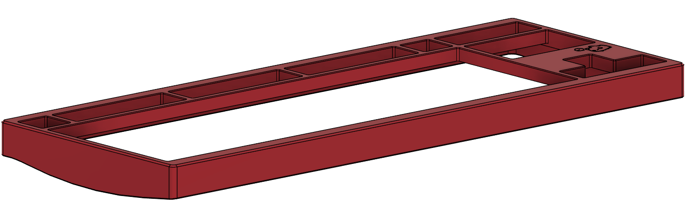
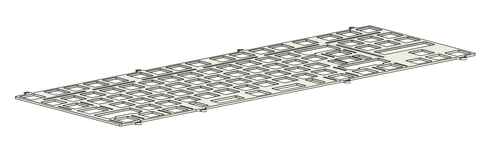
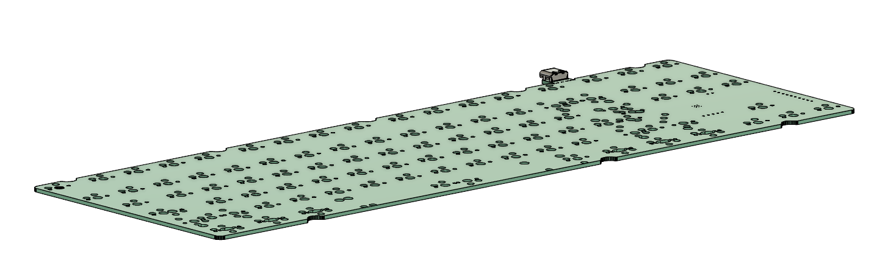
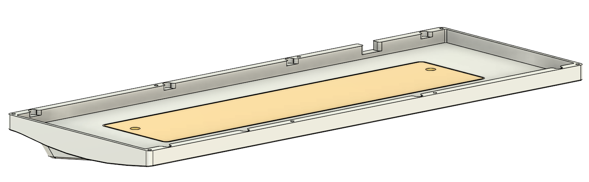
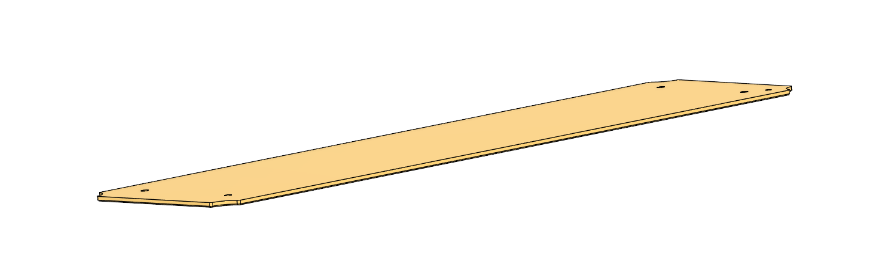
Conclusion
From typewriters to custom keyboards, keyboards have evolved alongside technology and human ingenuity. Each innovation, from QWERTY keyboard to Cherry MX switches, from membrane cost-saving to the revival of mechanical craftsmanship, tells a story about how we interact with machines, work, play and express ourselves.
As a collector and designer, exploring this hobby has been a journey of discovery, connecting me to the people, innovations and communities that shaped the keyboards we know today.